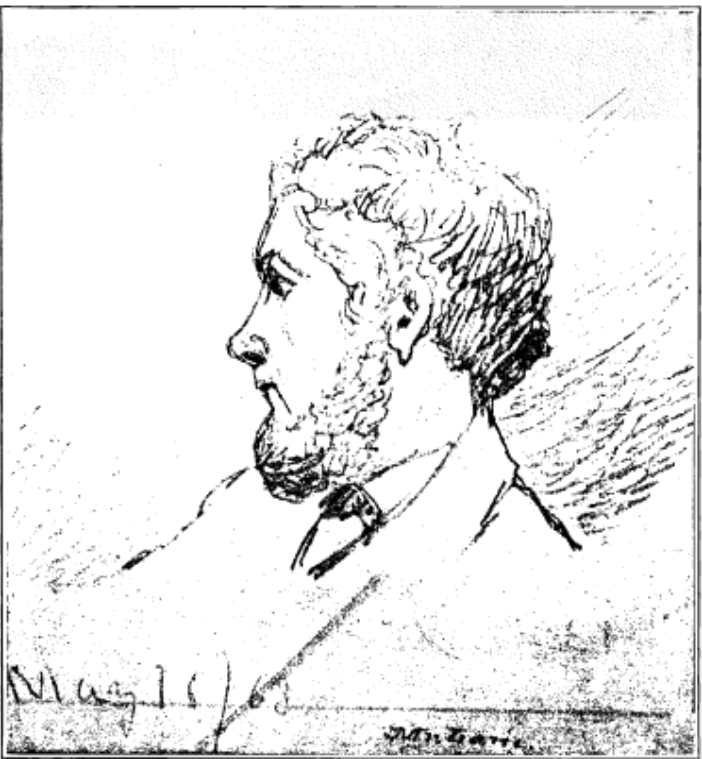
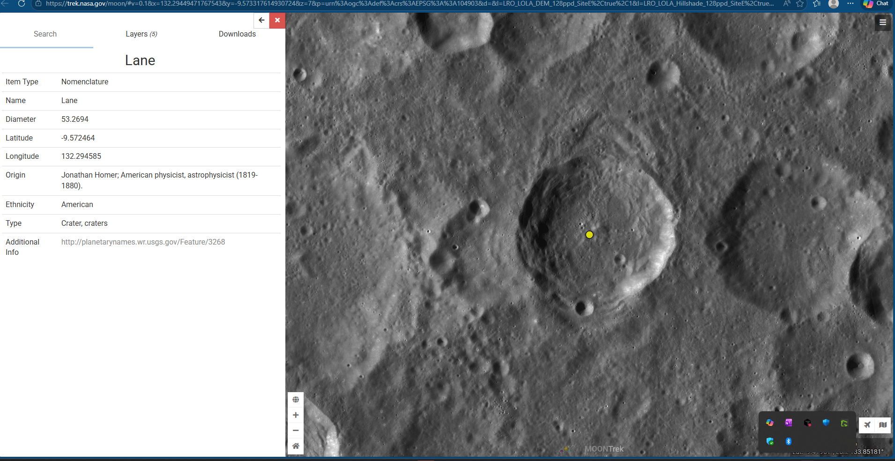

Lane Family · Scientific Lane
The family’s astrophysicist — published as Lane, H. J.
1819 Geneseo, N.Y. — 1880 Washington, D.C.

Portrait study
No studio photograph of him is known to survive. This pencil sketch endures because Charles S. Peirce put Lane on the list of 28 American scientists to receive Photometric Researches in 1878 — and scholars kept the list.
How he fits the family
Life arc
Venango County, Pennsylvania
Eight miles apart on the Allegheny — where this branch put down roots
The gaseous Sun · 1870
1ξ² ddξ (ξ² dθdξ ) + θn = 0
Lane, H. J. (1870). Am. J. Sci. — gaseous Sun held up by internal heat; basis of the Lane–Emden equation.
Lunar nomenclature · IAU 1970
